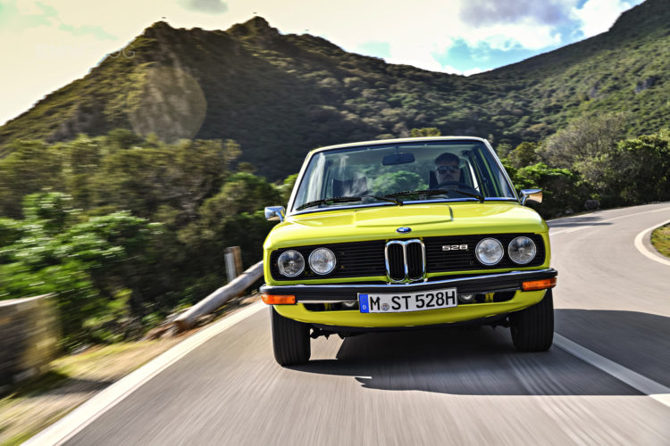

|
The BMW 5 Series is a executive car manufactured by BMW since 1972. It is the successor to the New Class Sedans and is currently in its seventh generation.
Initially, the 5 Series was only available in a sedan body style. The wagon/estate body style (called "Touring") was added in 1991 and the 5-door fastback (called "Gran Turismo") was produced from 2009 to 2017.
The first generation of 5 Series was powered by naturally aspirated inline-4 and straight-6 petrol engines. Following generations have been powered by inline-4, straight-6, V8 and V10 engines with both natural aspiration and turbocharging. Since 1982, diesel engines have been included in the 5 Series range.
The 5 Series is BMW's second best-selling model after the 3 Series.[1] On January 29, 2008, the 5 millionth 5 Series was manufactured, a 530d Saloon in Carbon Black Metallic.[2]
BMW's three-digit model naming convention began with the first 5 Series.[3]
Since the E28, all generations of 5 Series have included an M version, called the BMW M5.
|

|
|

|
The E12 5-series Chief of design was Paul Bracq — Marcello Gandini, working at Bertone for BMW, co-designed the car.
At the 1970 Geneva Motor Show, BMW unveiled the 2200ti Garmisch concept car, a 2-door sedan which was developed in conjunction with Bertone. Although the 2200ii Gamish concept car was shown as a potential replacement for the New Class sedans, the eventual E12 production model is visually very different to the concept car.
BMW had previously located turn signal stalks on the right hand side of the steering wheels, and the E12 was their first model to have the stalk on the left side.
|